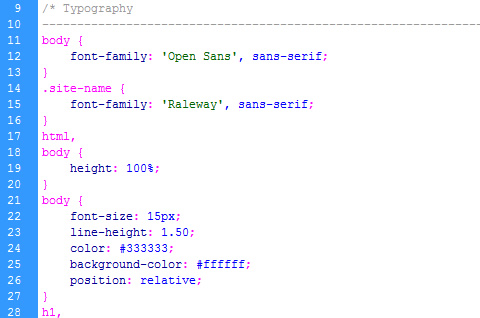
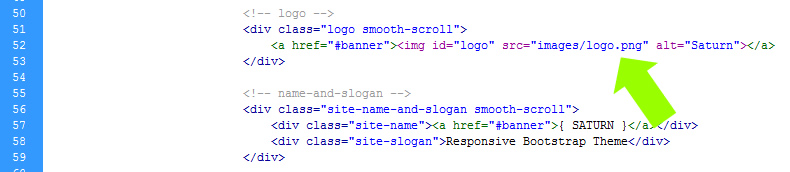
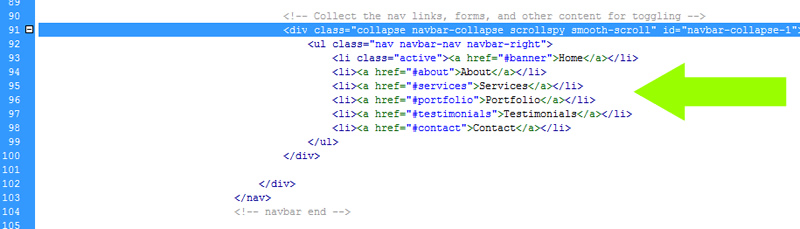
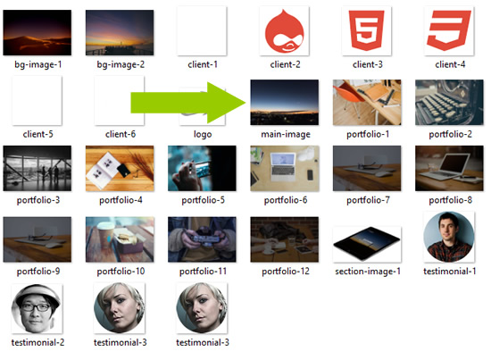
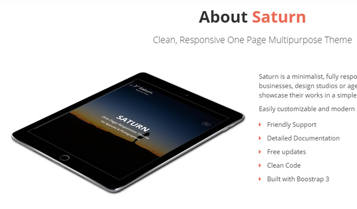
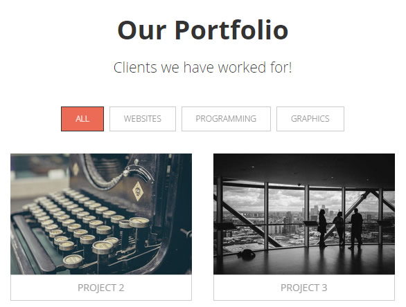
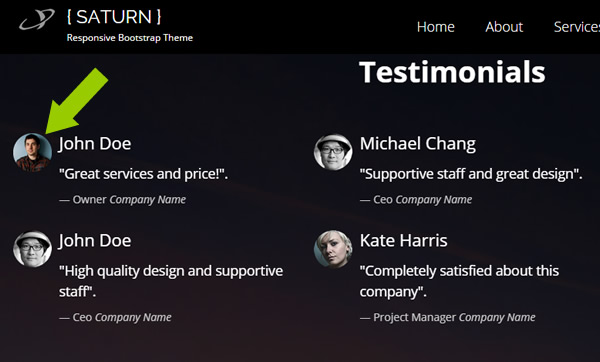
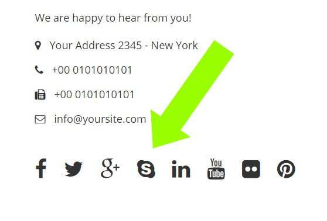

Documentation
About the Saturn Template
This Template is made with Bootstrap v 3.3.0 and it's very easy to modify it as you wish.
Included files
The main.zip file you have downloaded contains the following folders:
- 1. _documentation
- 2. bootstrap ( bootstrap.css, bootstrap-min.css, bootstrap-theme.css, bootstrap-theme.min.css )
- 3. css ( animate.css, animations.css and style.css )
- 4. fonts ( font-awesome )
- 5. images (all the images used inside the template )
- 6. js ( template.js )
- 7. plugins (jquery.js, jquery.min.js, jquery.appear.js, modernizr.js, jquery.backstretch.js )
- 8. index.html ( the one page site template )
Customizing the Template
- How do i change the page background color?
Locate the style.css inside the css folder. Go to line 25 and change the color with one of your choice.

- How do i change the logo with my own?
Locate the images folder and replace the logo,png (60 x 49 px) with your own.

- How do i modify the menù voices?
Open the index.html and find the line 91 as shown in the picture below. Modify the menu voices as you wish, don't forget to change the anchor text name as well for the scrolling to work properly.
- 
- How do i change the main picture?
Locate the main-image.jpg inside the images folder (see the picture below) . Create an image ( at least 1920px width) and overwrite the existing one. If you change the picture's name, then you will have to change the name inside the page as well!
- 
- How do i change the about section image?
Locate the images folder and replace the section-image-1.jpg image with your own.

- How do i change the portfolio section images?
Inside the images folder, replace all the images named portfolio-1.jpg, portfolio-2.jpg, portfolio-3.jpg and so on... Suggested dimensions 750 x 500 px

- How do i change the testimonials pictures?
Inside the images folder find the following pictures: testimonial-1.jpg, testimonial-2.jpg, testimonial-3.jpg, replace with your own!

- How do i customize my social networks addresses?
Locate the index.html, go to 975 line and start modifying the social network addresses with your own

Further Support
For additional help and /or customization, you may contact us using the form on our Gridgum profile page.
Thank you again
Best Regards
Tony Sale
CbsNet
Internet Solutions